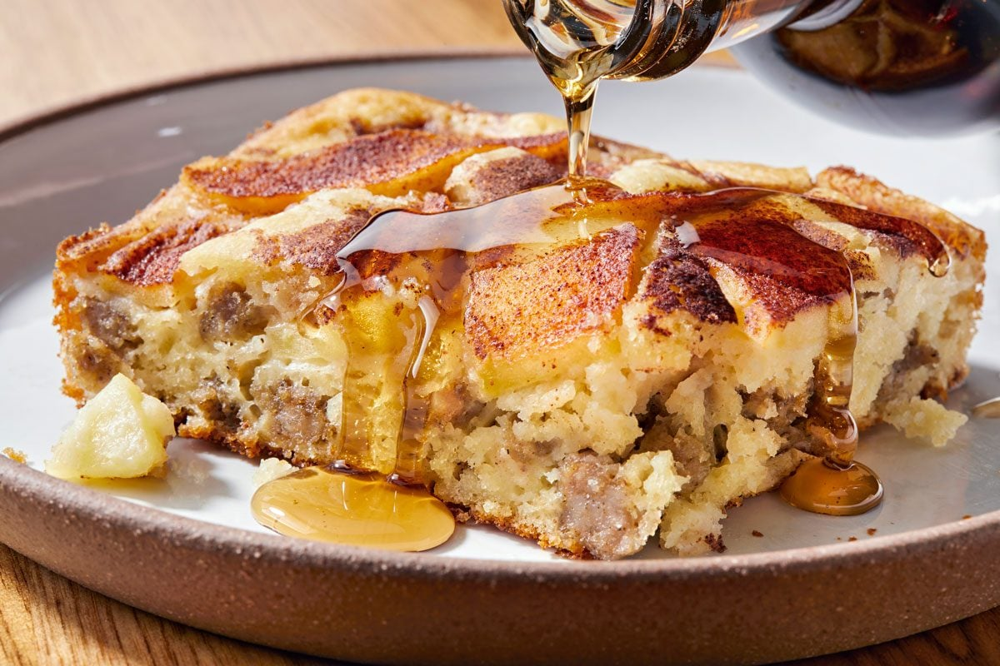

Home

Sausage Apple Pancake Casserole
The batter for this pancake casserole is studded with cooked sausage and
then topped with apples and a sprinkle of cinnamon sugar. It's a hot
breakfast to share with the whole family!
Ingredients
- 1 lb bulk pork sausage
- 2 cups biscuit/baking mix
- 1 1/3 cups 2% milk
- 2 large eggs
- 1/4 cup canola oil
- 2 medium apples, thinly sliced
- 2 tablespoons cinnamon sugar
- Maple syrup, for serving
Steps
- Preheat oven to 350 F.
-
In a large skillet over medium heat, cook and crumble sausage until no
longer pink, 5-7 minutes; drain.
-
Mix biscuit mix, milk, eggs and oil until blended; stir in sausage.
-
Transfer biscuit mixture to a greased 13x9-in. baking dish. Top with
apples; sprinkle with cinnamon sugar.
- Bake 30-45 minutes or until set. Serve with syrup.